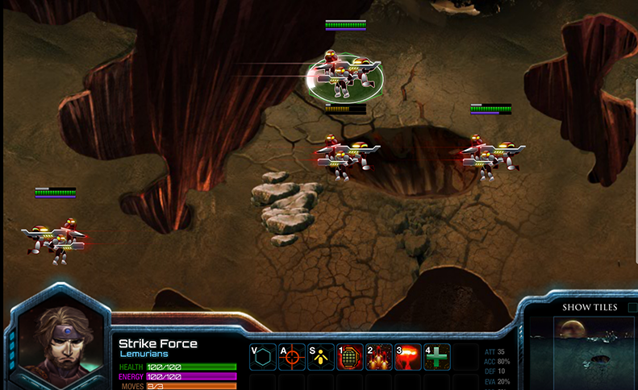
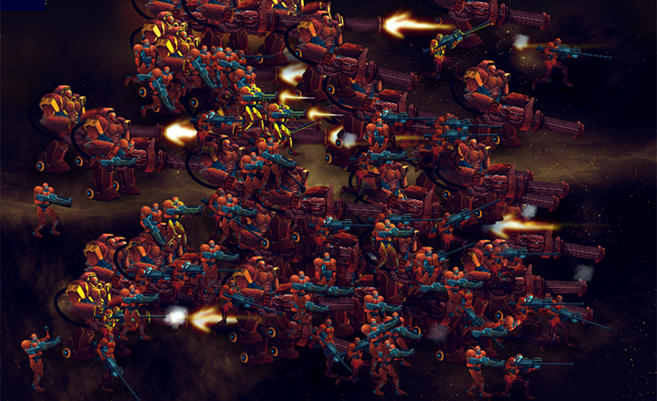

I'm here to talk about my little personal project
A turn-based game built in HTML5
But before anything else, let me tell a bit about myself...
I do front-end design and development as a profession and I develop games as a hobby.
Spent 8 years doing Flash Development.
But has now fully migrated to HTML5 and JavaScript.
Wings of Lemuria is a small personal project I started way back in 2009 as something to do in my spare time.
Initially made the prototype in Flash using ActionScript 3.0.
First problems encountered
- Choppy animation due to multiple MovieClip instances.
- Flash Display Objects were expensive to process when dealing with multiple animations.
Improving performance
Blitting is a traditional technique used in game development, where you copy pixels and paint it over a bitmap canvas.
Copy the pixel data and store them to a vector array.
Bitmap CanvasPaint it over to the main canvas
Made another prototype using the blitting technique.

Initial results
- Performance was noticeably better
- CPU consumption decreased significantly
- Memory usage increased at the expense of speedy performance

Blitting in Flash doesn't allow you to do bitmap data manipulation like scaling or rotation using bitmapData.copyPixels.
First look at HTML5
Features in HTML5 that attracted me as a Flash Developer
- Canvas
- Audio
- Video
- Desktop Notifications
Decided to write a quick prototypewith the Canvas 2D API. Using the same game assets that I had before.
Initial results
- Performance matches the blitting implementations in Flash.
- Each drawing operation allowed me to scale and rotate pixel data at minimum CPU cost.
- Writing a rendering library from scratch is tricky and time consuming.
JavaScript is a scripted language which means the code doesn't need to compile.
Which sometimes is a double-edged sword.
I decided to build my game in HTML5.
Because Flash was becoming irrelevant to the modern web
Tools of the trade
The CreateJS Suite
Preparing Game Asssets
SpriteSheet class as frame data.
Animating in Flash
Sprite Sheet Output
Writing the game client in JavaScript
- Use AMD for loading modules and dependencies
- Modularize code
- Fix bugs quickly
- Add comments when doing unconventional coding practices and update it as quickly as you can
Basic AMD usage
define(
moduleId,
dependencies,
definition
);AMD example
define(
'game',
['my-class'],
function(MyClass) {
var myClass = new MyClass();
}
});
Entity Component System
This allows me to create a more de-coupled game architecture without the need of complex OOP.
var entity = factory.create([components]);
Example usage
Entities are objects that interact with the game.
/** entity magic training **/
var wizard = entity.create('Magic');
/** entity with swordsmanship training **/
var swordsman = entity.create('Sword');
/** entity with both magic and sword training **/
var jedi = entity.create('Sword', 'Magic');
/** a jedi entity that succumbed to the dark side **/
var sith = entity.create('Sword', 'Magic', 'DarkSide');
Defining components
Attaching components to entities exposes new sets of APIs.
components.register('Magic', function(entity) {
entity.firaga = function(enemy) {
enemy.hp--;
enemy.burning = true;
}
entity.thundaga = function(enemy) {
enemy.hp--;
enemy.paralyzed = true;
}
});
var toon = factory.create();
var mage = factory.create('Wizard');
/** toon takes a damage and is in burning state! **/
mage.firaga(toon);
/** toon takes a damage and is paralyzed! **/
mage.thundaga(toon);
Build the user-interface outside of Canvas
- CSS3 transforms and transitions are hardware accelerated
- UI Animations are easier to maintain in CSS than hardcoded JavaScript
- Concatenate images into one PNG sprite sheet for performance.
About CSS pre-processors
- Helps with maintaining a large modularized CSS code-base
- Reduces redundant style definitions
- Easier to manage
- Nesting, mixins and other goodies
Stylus and Nib
- Minimalist CSS dialect (optional braces, colons and semicolons)
- Arithmetics
- Variables
- Runs on node.js
Final thoughts
- Anytime time you're fixing a problem that's already been solved, you're being inefficient.
- Use available libraries. Read their source code and learn from them.
- If your library is missing a feature, fork the project and contribute.
- Invent something only out of necessity.
- Focus on getting the game done!
Thank you for listening!
Follow me on Twitter @jamesflorentino
or read my blog for random front-end dev tips blog.jamesflorentino.com
If you're looking for a link to my game, it's still a work in progress. You can however subscribe to its Facebook page to get updated once it's out.